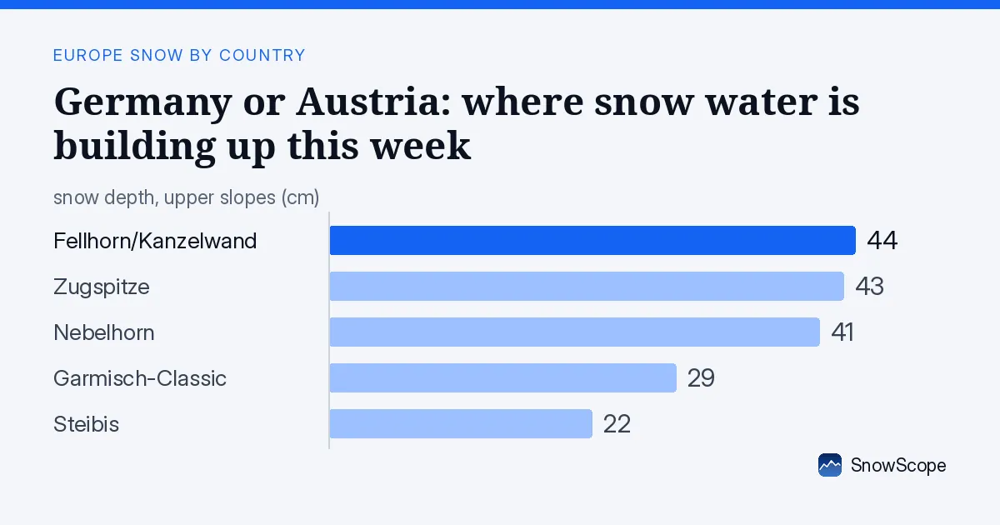
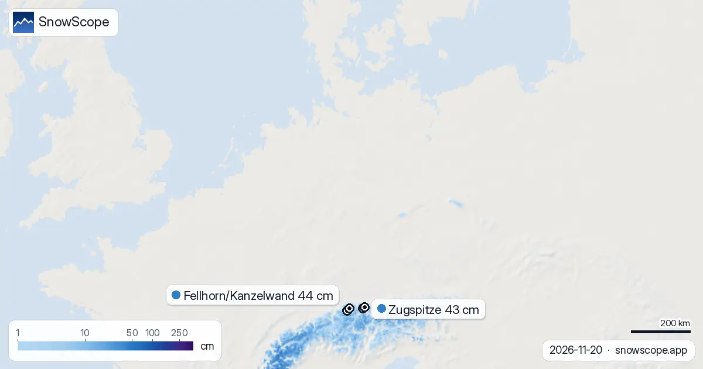
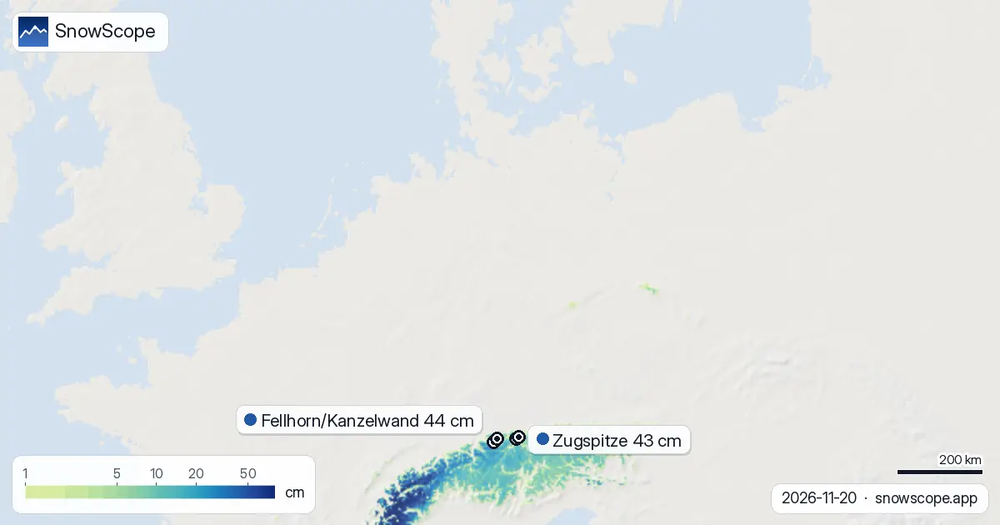

Germany or Austria: where snow water is building up this week
Early-season snow is falling across the Alps, but Austria's mountains are storing more water right now. Germany has just 4 percent snow cover on 20 November, while Austria sits at 44 percent—a gap that matters for winter water supply.
See the live snow forecast for Fellhorn/Kanzelwand in the SnowScope appSnow depth, powder alerts and the 3D map, free.
Austria ahead: more snow cover, more water
Austria is holding significantly more snow on the same date. At 44 percent snow cover across the measured area, Austria has built up a water reserve that Germany has not yet matched. Austria's leading resort, Rifflsee, sits at 120 cm depth, more than double the depth at Fellhorn/Kanzelwand in Germany (44 cm). This difference reflects both higher mountains in Austria and earlier snow accumulation through November.
For a snow hydrologist, what matters is not just area covered but the volume of water locked in that snow. Austria's greater coverage means more meltwater will run into rivers and reservoirs as temperatures rise in spring. Germany's 4 percent cover means much of the country's lower ground remains dry.
| Country | White | Deepest resort | Next 7 days |
|---|---|---|---|
| Germany | 4 % | Fellhorn/Kanzelwand | 33 cm |
| Austria | 44 % | Rifflsee | 44 cm |
| Switzerland | 64 % | Glacier 3000 | 89 cm |

Germany's high mountains catching up fast
Although Austria leads overall, Germany's high peaks are filling quickly. The Allgäu Alps received 34 cm of new snow in the last 72 hours, the wettest band in the country. At heights above 2000 m, Germany shows 18 cm mean depth and near-complete snow cover. The snow line sits at 1300 m, so only the upper third of German ski terrain is white today.
Fellhorn/Kanzelwand in the Allgäu (top 1965 m) now leads all German resorts with 44 cm depth and 35 cm of fresh snow in three days. This reservoir of high-altitude snow will feed lowland streams as the season progresses, but it is building from a thin base.

Where the snow is deepest in Germany
The best snow water storage in Germany is above 2000 m. Only 58 of 230 resorts have measurable snow on 20 November, and most of these are high. Zugspitze (2627 m) has 43 cm and received 16 cm in three days. Nebelhorn (2213 m) holds 41 cm and gained 29 cm. Both sit well above the snow line and will drain into river catchments through winter.
At 1500–2000 m, mean depth reaches 9 cm and coverage is nearly complete. Below 1500 m, snow is patchy or absent. This vertical band is the transition zone: in a few warm days, that shallow snow could vanish, leaving no water for November recharge.
The next three days: Germany gets heavier falls
Snow will fall across both countries over the coming days, but Germany will see the larger totals. Our snow model forecasts a maximum of 30 cm in Germany by 23 November, with 14 cm possible on 22 November alone. Austria will receive up to 44 cm in the next seven days, spread across a longer period.
For water managers, this matters: concentrated heavy snow on high ground can lead to rapid runoff if followed by warm rain. Gradual falls are easier to absorb into mountain reservoirs. Germany's main event is 22 November; Austria's precipitation will be steadier.
What the bands show: Germany's thin autumn snow
Germany's snow is narrowly stacked by height. From 500–1000 m: nothing. From 1000–1500 m: only 1 cm mean depth and 37 percent coverage. From 1500–2000 m: 9 cm and 99 percent coverage. From 2000–2500 m: 18 cm and total coverage. This steep gradient is typical of early season, when only the highest peaks stay frozen. Austria's 44 percent average suggests deeper snow across a broader range of altitudes.
For snowmelt timing: Austria will likely release meltwater earlier in spring because snow sits at lower elevations where temperatures warm first. Germany's water is locked higher up and will come later.
Looking ahead: second week stays dry
After 23 November, snow stops in both countries. The second week of late November (28 November–4 December) will bring only 12 cm maximum in Germany, spread thin over days. This pause matters: early autumn snow that lands on bare ground or thin base can compact, reduce its water content, or disappear. Austria's advantage in cover now gives it a head start if December stays cold.
Watch the data as 22 November approaches. Heavy, wet snow on a thin base can slide; check the official avalanche bulletin if you venture off-piste. SnowScope tracks these changes daily: visit snowscope.app to follow water storage across the Alps as the season builds.
Tips for skiers
- Ski above 1500 m in Germany: the snow line is at 1300 m, so lower slopes are bare ground mixed with patches. Upper runs at Fellhorn, Nebelhorn, and Zugspitze have solid snow on 20 November.
- Austria's deeper snow is safer to ski now, but after 22 November's new fall, watch for instability on steep slopes in both countries. Consult the official avalanche bulletin before going off-piste.
- Water management: Germany's 14 cm forecast for 22 November on small high-altitude area means limited runoff. Austria will capture more water overall because of its broader coverage.
- In one week, the picture may change: if temperatures drop and snow sticks to lower ground, Germany's white cover will expand. Check the forecast after 23 November.
- Early-season snow is thin and may hide rocks. Ski slowly and familiarize yourself with the terrain under new cover.
About these numbers
Resort snow depths are the deepest snow on the resort's upper slopes from the SnowScope snow model (about 1 km, run of 20 November); they are estimates for an area, not a measurement at one point. Station values are measurements on the date shown. Forecasts can change. Always read the official avalanche bulletin before going off-piste.
Cite this report
For research, teaching or the press: the numbers and charts are free to reuse under CC BY 4.0 with this citation.
SnowScope (2026), Germany or Austria: where snow water is building up this week, https://snowscope.app/blog/en/2026/11/germany-snow-vs-neighbours-20-november-2026.html, accessed 2026-11-20
SnowScope (Atlas Labs). (2026, November 20). Germany or Austria: where snow water is building up this week. SnowScope snow reports. https://snowscope.app/blog/en/2026/11/germany-snow-vs-neighbours-20-november-2026.html
BibTeX
@misc{snowscope2026germanysnowvsneighbours2,
author = {{SnowScope (Atlas Labs)}},
title = {Germany or Austria: where snow water is building up this week},
year = {2026},
month = nov,
howpublished = {\url{https://snowscope.app/blog/en/2026/11/germany-snow-vs-neighbours-20-november-2026.html}},
note = {Published 2026-11-21 13:33 UTC; accessed 2026-11-20}
}· CC BY 4.0 · Methods, data and tools →
Fellhorn/Kanzelwand: snow and temperature by height, this winter vs last (tools) →
Follow Fellhorn/Kanzelwand
Free: a message when fresh snow is coming, and the forecast every morning.
More snow reports

Up to 30 cm of snow fell on northern Velebit and Bjelolasica on Friday 13 November 2026. By Tuesday it was gone. Day by day, what the mountains kept, and when snow comes back.

Only Borovets and Bansko have a trace of snow at the top today, 2 cm each. A week ago Borovets had 11 cm. Day by day, and the one snowy day in the forecast.

December snow odds from 46 winters and checked day prices: Ski Cooper $49, Les 3 Vallées €75.70, Oukaïmeden no official tariff. Where a cheap December ski day works.